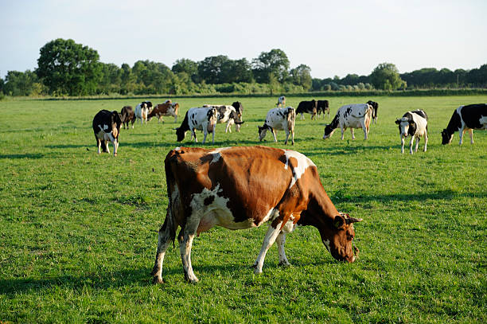
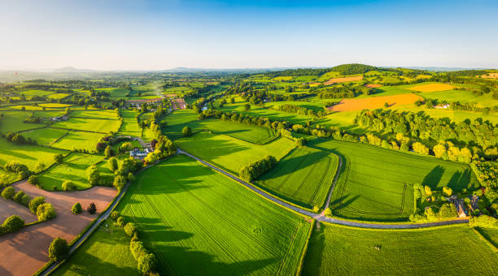
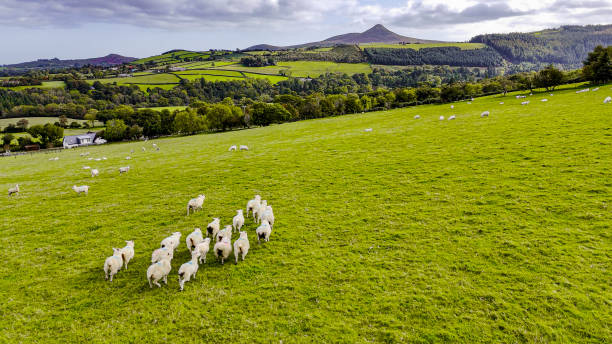
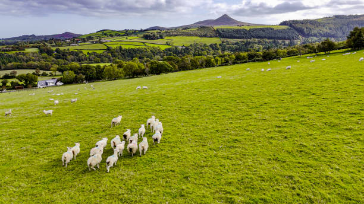
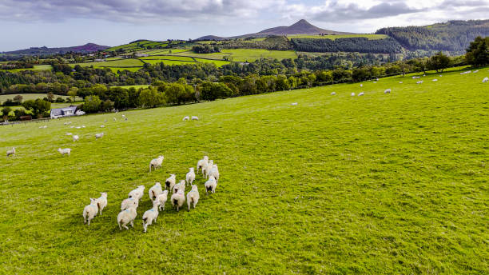
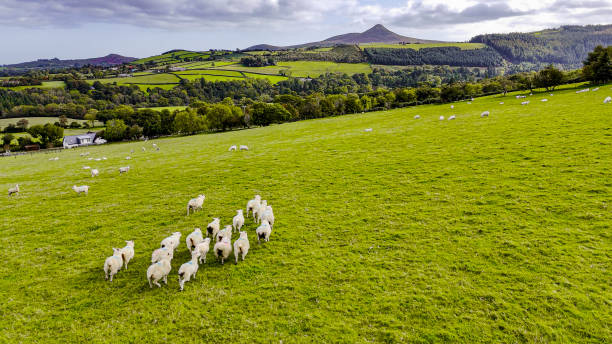

Life on the Farm


 


At Farmify, we’ve proudly produced fresh, natural dairy products for over 30 years. Nestled in the heart of the countryside, our family-run farm combines time-honored traditions with sustainable, modern practices.
We believe happy, healthy cows produce the best milk. Our herd is pasture-raised, humanely treated, and fed a diet of non-GMO, locally-sourced feed. We ensure our farm is a stress-free environment for both animals and people.
From fresh milk to artisan cheeses and butter, we bring the best of the farm directly to your table. Every product is crafted with care, cleanliness, and a commitment to quality.
Transparency, trust, and taste — that’s what sets us apart. We welcome farm visits, support local communities, and strive every day to protect our land for future generations.
